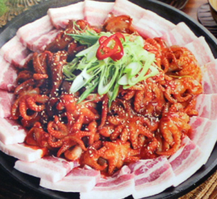

|  |
| 번호 | 9 |
|---|---|
| 분류 | 음식 |
| 장소 번호 | F0009 |
| 장소명 | 나정순할매쭈꾸미 |
| 장소 주요 설명 | 파주 최고의 쭈꾸미 |
| 장소 상세 설명 | 교하 중심부에 위치하고 있으며 양념이 버무려진 쭈꾸미를 제공받는 다른 업체와는 달리, 직접 전수 받은 양념 비법으로 매일매일 직접 양념한다. 그렇기 때문에 더욱 맛있는 쭈꾸미를 맛볼 수 있습니다. 한번 먹어본 사람은 달콤하면서도 매콤하게 땡기는 맛을 잊을 수 없어 다시 찾습니다. |
| 주소 | 파주시 순못길 122-9 |